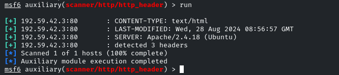

start the service
use auxiliary/scanner/http/http_version
show options and there is a SSL that is required and if that is SSL true, set it to false
hit run
now the http_version is here
next step is to go for http header modules
use auxiliary/scanner/http/http_header
check the options and it needs to run

Hidden Directories:
robots.txt file for apache server
use auxiliary/scanner/http/robots_txt
run
it gives the list of robots.txt file content
curl <target_ip>/data/
it will list the data file
curl <target_ip>/secure/
this is unauthorized or the credentials supplied are wrong means it is secure
now apply the brute force
directory brute force is in row now
use auxiliary/scanner/http/dir_scanner
hit run and it will revael the file
now file brute force
use auxiliary/scanner/http/files_dir
we can add the filter for the type of the files like php etc
hit run and it will enumerat the files
now we found /secure/ directory so we will enumerate it further
use auxiliary/scanner/http/http_login
show options gives you the UserPass_FILE so we will not use it as we have already in pass_file and user_file added from metasploit framework
so we set AuthURI to /secure/
then we run and it will brute force and gives a user or users that are valid and can access
bob:123321